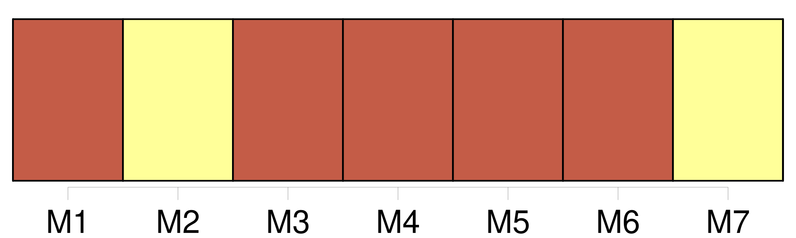
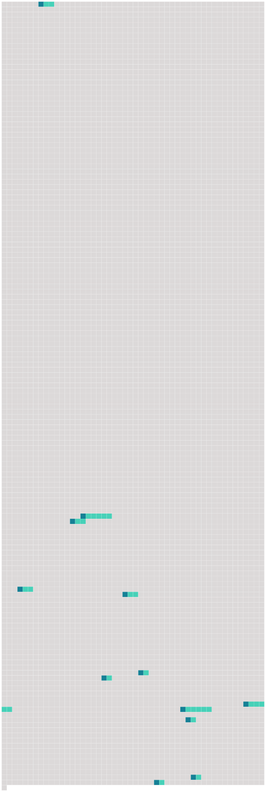

Longueur nb maillons : 12 mentions |
 |
Les parties contractantes font en sorte que [leurs autorités compétentes] soient tenues de mettre à la disposition de toute personne physique ou morale les informations décrites au paragraphe 2, en réponse à toute demande raisonnable, sans que ladite personne soit obligée de faire valoir un intérêt, sans frais disproportionnés, le plus rapidement possible et dans un délai de deux mois au plus. [179 phrases] Les rejets ponctuels dans la zone maritime, et les émissions dans l'eau ou dans l'air, qui atteignent la zone maritime et peuvent lui porter atteinte, sont strictement soumis à autorisation ou à réglementation par [les autorités compétentes des parties contractantes] [2 phrases]
Les parties contractantes mettent en place un dispositif de surveillance et de contrôle réguliers permettant à [leurs autorités compétentes] d'évaluer le respect des autorisations et des réglementations relatives aux émissions dans l'eau ou dans l'air. [13 phrases]
Les parties contractantes font en sorte : [18 phrases] Chaque partie contractante donne instruction aux navires et aux aéronefs de son inspection maritime ainsi qu'aux autres services compétents de signaler à [ses autorités] tous les incidents ou situations survenant dans la zone maritime qui donnent à penser qu'une immersion a été effectuée ou est sur le point de l'être en violation des dispositions de la présente annexe.
Toute partie contractante dont [les autorités] reçoivent un tel rapport informe en conséquence, si elle le juge approprié, toute autre partie contractante concernée. [13 phrases] L'utilisation, le rejet ou l'émission par des sources offshore de substances qui peuvent atteindre et affecter la zone maritime est rigoureusement soumis à autorisation ou à réglementation par [les autorités compétentes des parties contractantes] [2 phrases]
[Les autorités compétentes des parties contractantes] mettent en place un système de surveillance et de contrôle afin d'évaluer le respect des autorisations ou des réglementations prévues au paragraphe 1 de l'article 4 de la présente annexe. [2 phrases]
Les parties contractantes font en sorte que [leurs autorités] , en accordant ces permis, mettent en œuvre les décisions, les recommandations et tous les autres accords pertinents et applicables adoptés en vertu de la convention. [14 phrases] Chaque partie contractante donne instruction aux navires et aux aéronefs de son inspection maritime ainsi qu'aux autres services compétents de signaler à [ses autorités] tous les incidents ou les situations survenant dans la zome maritime, qui donnent à penser qu'une infraction aux dispositions de la présente annexe a été commise ou est sur le point de l'être.
Toute partie contractante dont [les autorités] reçoivent un tel rapport informe en conséquence, si elle le juge approprié, toute autre partie contractante concernée. |
 |
Il est possible de télécharger la ressource sur la page Ortolang |
Si vous avez des questions ou vous voyez des erreurs, merci d'envoyer un mail à silvia.federzoni89@gmail.com |